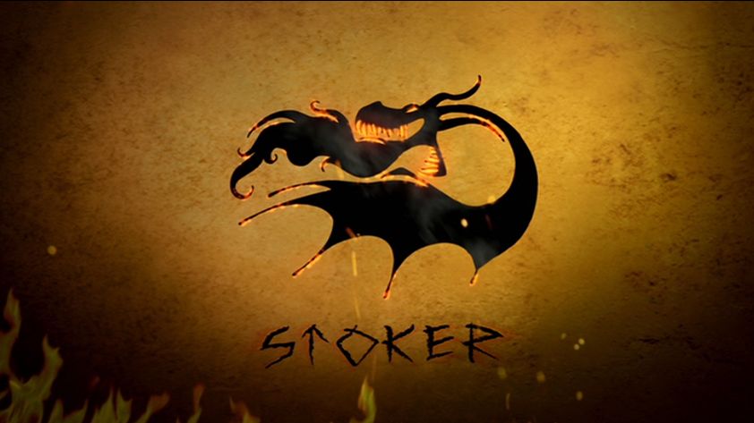
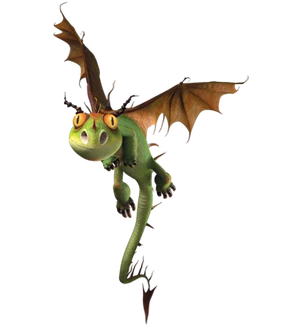
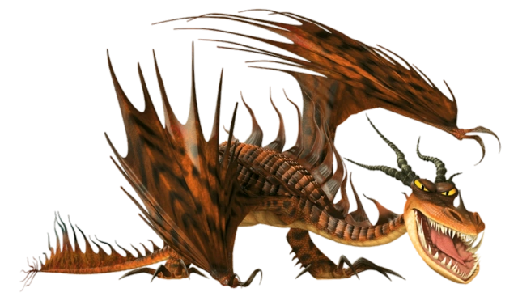

Stoker Class Dragons
Stoker class dragons are hot-headed fire breathers. a notable characteristic of these dragons is their high shot limit and firepower. Some of them are capable of setting themselves, or part of their body on fire. When stoker class dragons become sick or exhausted, they might loose their ability to produce flames.
The dragon species included are:
Terrible Terror
(terrible terror)
Description:
Those who may underestimate a Terrible Terror because of its small stature should probably think again. Despite their size, Terrible Terrors are known to be one of the most feared species of dragons. As members of the Stoker Class, they possess extremely accurate flame-throwing abilities. They are also known to be especially stealthy and agile. These dragons often live in flocks along the Isle of Berk.
While Vikings should never underestimate these Terrible Terrors, it is important to know that these mischievous dragons can be trained. With determination and patience, young Vikings have been able to gain the trust and friendship of these once-feared Terrible Terrors.
Characteristics:
The Terrible Terror resembles a Common or Garden Dragon in appearance. It has an iguana-like body, large yellow eyes, two pairs of horns, one pair of wings, small spines, and an arrow-shaped tail tip. It comes in various colors, with green being the most common. Others are red, orange, blue, yellow and purple. Its physical attributes (such as the type of horn and spinal ridge) suggest that, despite the size difference, it is closely related to the Monstrous Nightmare. Its large yellow eyes and small size make it one of the most adorable species of dragons.
1.81 meter long & 0.43 meters tall
How to train them:
They also seem to be fairly easy to train. Giving them a light to chase can help out for training as this could be a great beginner dragon for young Vikings. Or another way of training Terrible Terrors just to feed them, by giving a single Terror a fish, and, showing great trust, as long as you prove to be of no threat to it, Terrors are easy and docile companions. Terrible Terrors can be trained for riding only when they attain Titan Wing status. Dragon Riders train Terrible Terrors with various skills: delivering mail, butting heads, retrieving items, stealth, and firing and attacking on command.
Monstrous Nightmares
(monstrous nightmare)
Description:
Monstrous Nightmares are known as some of the most ferocious and aggressive dragons. As a member of the Stoker Class, these dragons are hot-headed and have a particularly strong ability to breathe fire. Monstrous Nightmares are known for setting their entire body on fire. These dragons are incredibly fearsome and can also fly at a high speed.
- These creatures are usually either purple or scarlet in color with snake-like features. Sly and sneaky, Monstrous Nightmares also use their claw-tipped wings to crawl along the ground. Their intimidating glowing eyes strike fear to those who come near.
- While these dragons might appear intimidating at first, it is important to remember that they can be trained. All that these belligerent dragons need is a firm hand and a confident trainer!
Characteristics:
Monstrous Nightmares come in many different colors such as purple, blue, scarlet, or green and possess a long, snakelike neck and tail. Unlike some other breeds of dragon, it has no forelegs, it can use its claw-tipped wings to "crawl" along the floor. Their horns might be used as a visual display and in defense, but the swept back position of the horns means it is unlikely to use them in combat. It can be noted that male Nightmares are larger than females with longer wing spikes and horns when comparing.
18.59 meters long & 4.85 meters tall
How to train them:
The best way to earn the trust of a Monstrous Nightmare is simply to show it the respect it deserves. Placing a gentle hand on its snout and showing you are not a threat to it is the best way to go. While Nightmares are generally tough, tenacious and rebellious, mutual respect and trust will certainly help both parties in the long run.
Pinning a Nightmare's horns to the ground can help calm them down. Violence like grabbing any of their body parts prove to be ineffective.
Contact us
Contact no.: 0991-482-1222
Email: elijahlaqui@gmail.com
Facebook: Elijah Kean Laqui